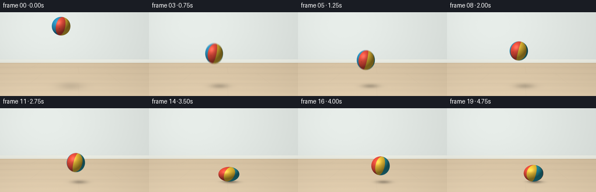
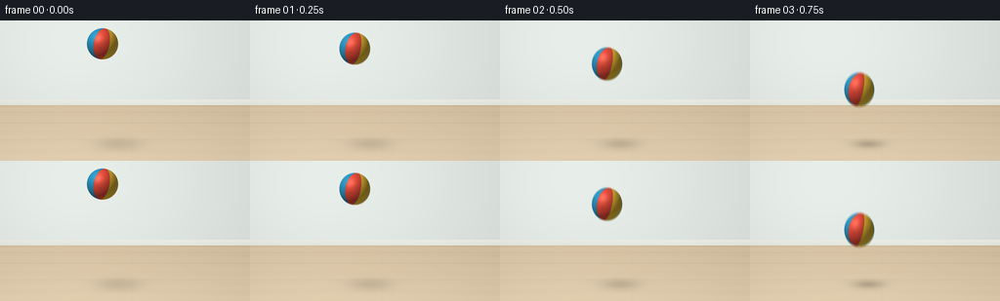

CODING AGENTS AS PIXEL WORLD MODELS
traex/GPT-6.1-Sol · mechanics_0041
点击播放 · 原生 RGB 像素
逐轮保存的候选
回放视频、检查图与代码变化。
每份候选均可单独播放。实际图片检查记录在下方工具轨迹中。
候选 01播放与检查图
点击播放 · 原生 RGB 像素


展开代码变化
--- 上一保存版本
+++ 本次保存版本
@@ -0,0 +1,192 @@
+"""Procedural RGB animation of an elastic inflatable rubber ball.
+Only numpy/Pillow are used for geometry, materials, and rendering.
+"""
+from pathlib import Path
+import json
+import math
+import numpy as np
+from PIL import Image
+import artifact_io
+
+ROOT = Path(__file__).resolve().parent
+SPEC = json.loads((ROOT / 'task_spec.json').read_text())
+W, H = SPEC['width'], SPEC['height']
+SS = 4
+WW, HH = W*SS, H*SS
+Y, X = np.mgrid[0:HH, 0:WW].astype(np.float32)
+X = (X+.5)/SS
+Y = (Y+.5)/SS
+rng = np.random.default_rng(1401)
+
+
+def background():
+ # Warm, softly lit plaster above a real, pale wooden floor.
+ wall = np.zeros((HH,WW,3), dtype=np.float32)
+ wall[:] = [219, 225, 221]
+ light = 15*np.exp(-((X-58)/140)**2-((Y-20)/110)**2)
+ wall += light[...,None]
+ wall -= (5*Y/H)[...,None]
+ wall += rng.normal(0,.28,(HH,WW,1))
+ floor = Y >= 87
+ floorc = np.zeros_like(wall)
+ floorc[:] = [207, 187, 156]
+ floorc += (13*(Y-87)/57)[...,None]
+ floorc += (8*np.exp(-((X-30)/170)**2))[...,None]
+ # Board grain runs across the view, with long irregular fine fibers.
+ grain = (1.15*np.sin(Y*3.9 + .25*np.sin(X*.052)) +
+ .72*np.sin(Y*11.7 + .55*np.sin(X*.021)) +
+ .45*np.sin(Y*29.1 + .31*np.cos(X*.081)))
+ grain += 1.2*np.sin(Y*.64+.7*np.sin(X*.015))
+ floorc += grain[...,None]*np.array([1.0,.88,.65])
+ floorc += rng.normal(0,.26,(HH,WW,1))
+ # Plank gaps narrow toward the back of the room.
+ rows = [87,94.5,105.5,122.2,145]
+ for k, sy in enumerate(rows[1:]):
+ line = np.exp(-((Y-sy)/.20)**2)
+ floorc -= line[...,None]*np.array([15,14,12])
+ floorc += np.exp(-((Y-sy-.42)/.28)**2)[...,None]*3
+ for row,(ya,yb) in enumerate(zip(rows[:-1],rows[1:])):
+ for joint in ([62,197] if row%2==0 else [135]):
+ # Ray from a distant vanishing point gives gentle perspective.
+ jx = 128+(joint-128)*(Y-61)/((ya+yb)*.5-61)
+ line = np.exp(-((X-jx)/.19)**2)*((Y>=ya)&(Y<yb))
+ floorc -= line[...,None]*np.array([10,9,7])
+ wall[floor] = floorc[floor]
+ # Slim white baseboard and its soft contact shadow.
+ band = (Y>=81)&(Y<87)
+ base = np.zeros_like(wall)
+ base[:] = [232,234,225]
+ base += (2.5*np.cos((Y-81)*.65))[...,None]
+ wall[band] = base[band]
+ wall -= (2.6*np.exp(-((Y-80.8)/.48)**2))[...,None]
+ wall -= (8*np.exp(-((Y-87.6)/.65)**2))[...,None]
+ vignette = 1-.045*((X-127)/180)**2-.024*((Y-67)/120)**2
+ return wall*vignette[...,None]
+
+BG = background()
+R = 16.0
+GROUND = 126.0
+G = 172.0
+IMPACTS = [1.0, 2.5, 3.5, 4.25, 4.75]
+# Flights are ballistic: the reduced peak height visibly demonstrates damping.
+FLIGHTS = [(1.0,2.5,129.), (2.5,3.5,86.), (3.5,4.25,64.5), (4.25,4.75,43.)]
+
+
+def pose(t):
+ t = max(t,0.)
+ if t <= 1:
+ altitude = 86.-.5*G*t*t
+ velocity = -G*t
+ else:
+ altitude, velocity = 0., 0.
+ for a,b,v in FLIGHTS:
+ if a<t<=b:
+ dt=t-a
+ altitude=max(0.,v*dt-.5*G*dt*dt)
+ velocity=v-G*dt
+ break
+ # Brief compression followed by recovery rather than a rigid-sphere bounce.
+ squash = 0.
+ for i, hit in enumerate(IMPACTS):
+ strength=[.39,.29,.22,.16,.12][i]
+ squash += strength*math.exp(-((t-hit)/(.078 if t<hit else .10))**2)
+ stretch = .09*min(abs(velocity)/140.,1.)*(1-min(squash/.25,1))
+ ry=R*(1-squash+stretch)
+ rx=R*math.sqrt(R/ry)
+ if squash>.018:
+ # Contact preserves the lower surface on the floor during compression.
+ altitude *= max(0.,1-squash/.15)
+ cx=105+9.2*t
+ cy=GROUND-ry-altitude
+ rotation=.23+.26*t
+ return cx,cy,rx,ry,altitude,rotation,velocity
+
+
+def render(t):
+ cx,cy,rx,ry,alt,angle,vel=pose(t)
+ image=BG.copy()
+ # Area-light penumbra spreads and fades when the ball leaves the floor.
+ sx=cx+3.7+alt*.15
+ sy=GROUND+.9
+ sr=rx*(1+.012*alt)
+ shadow=np.exp(-2.1*((X-sx)/sr)**2-2.1*((Y-sy)/(3.5+.07*alt))**2)
+ opacity=.31*math.exp(-alt/80)
+ image *= (1-opacity*shadow)[...,None]
+ contact=np.exp(-2.1*((X-cx)/(rx*.86))**2-2.8*((Y-GROUND)/1.65)**2)
+ image *= (1-.26*math.exp(-alt/5)*contact)[...,None]
+
+ x0=max(0,int((cx-rx-1)*SS));x1=min(WW,int((cx+rx+1)*SS)+1)
+ y0=max(0,int((cy-ry-1)*SS));y1=min(HH,int((cy+ry+1)*SS)+1)
+ xx=X[y0:y1,x0:x1]; yy=Y[y0:y1,x0:x1]
+ nx=(xx-cx)/rx; ny=(cy-yy)/ry
+ d2=nx*nx+ny*ny
+ mask=d2<1
+ nz=np.sqrt(np.maximum(1-d2,0))
+ # Surface coordinates: slightly tilted, rotating molded longitude panels.
+ tilt=.20+.07*math.sin(t*.7)
+ u=nx*math.cos(tilt)-ny*math.sin(tilt)
+ v=nx*math.sin(tilt)+ny*math.cos(tilt)
+ px=u*math.cos(angle)+nz*math.sin(angle)
+ pz=-u*math.sin(angle)+nz*math.cos(angle)
+ longitude=np.arctan2(px,pz)
+ panel_width=2*np.pi/6
+ coordinate=(longitude+.36)/panel_width
+ pi=np.floor(coordinate).astype(int)%6
+ colors=np.array([[244,78,60],[255,206,56],[40,171,191],
+ [238,84,69],[255,205,61],[43,154,202]],dtype=np.float32)
+ albedo=colors[pi]
+ # Thin welded rubber seams, with rounded edges catching light.
+ frac=coordinate-np.floor(coordinate)
+ distance=np.minimum(frac,1-frac)*panel_width
+ seam=np.exp(-(distance/.015)**2)
+ edge=np.exp(-((distance-.026)/.011)**2)
+ albedo=albedo*(1-.17*seam[...,None])+edge[...,None]*5
+ # A small molded inflation valve is fixed to the material, not the screen.
+ valve=np.exp(-(((px-.10)/.065)**2+((v+.29)/.060)**2))*(pz>0)
+ ring=np.exp(-((np.sqrt(((px-.10)/.065)**2+((v+.29)/.060)**2)-1.04)/.16)**2)*(pz>0)
+ albedo=albedo*(1-.17*valve[...,None]) + ring[...,None]*4
+ texture=.60*np.sin(px*197+v*122)*np.sin(v*153-pz*141)
+ albedo+=texture[...,None]
+ # Ellipsoid normals keep squash looking like actual compliant rubber.
+ nnx=nx/rx; nny=ny/ry; nnz=nz/R
+ length=np.sqrt(nnx*nnx+nny*nny+nnz*nnz)+1e-9
+ nnx/=length; nny/=length; nnz/=length
+ light=np.array([-.49,.66,.57]); light/=np.linalg.norm(light)
+ ndl=np.maximum(0,nnx*light[0]+nny*light[1]+nnz*light[2])
+ illumination=.41+.57*ndl+.075*np.maximum(-nny,0)
+ material=albedo*illumination[...,None]
+ # Broad satin highlight and a compact soft reflection of the window.
+ half=light+np.array([0,0,1.]);half/=np.linalg.norm(half)
+ nh=np.maximum(0,nnx*half[0]+nny*half[1]+nnz*half[2])
+ specular=33*nh**25+12*nh**7
+ material+=specular[...,None]*np.array([1.,.98,.91])
+ fresnel=(1-nz)**3
+ material+=fresnel[...,None]*np.array([6,9,10])
+ target=image[y0:y1,x0:x1]
+ target[mask]=material[mask]
+ return np.clip(image,0,255)
+
+
+def main():
+ frames=[]
+ for i in range(SPEC['frames']):
+ t=i/SPEC['fps']
+ # Very short exposure provides subtle motion softness, not ghost trails.
+ contact=min(abs(t-v) for v in IMPACTS)<.01
+ if contact or i==0:
+ array=render(t)
+ else:
+ array=(render(t-.012)+2*render(t)+render(t+.012))/4
+ im=Image.fromarray(np.rint(array).astype(np.uint8),'RGB')
+ im=im.resize((W,H),Image.Resampling.LANCZOS)
+ frames.append(np.asarray(im))
+ frames=np.stack(frames).astype(np.uint8)
+ artifact_io.save(frames,ROOT)
+ print('Saved',frames.shape,'RGB frames at',SPEC['fps'],'fps')
+ print('Ball centers and radii:')
+ for i in range(SPEC['frames']):
+ cx,cy,rx,ry,h,a,v=pose(i/SPEC['fps'])
+ print(f'{i:02d}: x={cx:.1f} y={cy:.1f}, radii={rx:.1f}/{ry:.1f}, height={h:.1f}')
+
+if __name__=='__main__':
+ main()
可观测工具轨迹
实际执行的命令与返回图片。
命令 1exit 0
/bin/bash -lc "ls -la && cat prompt.txt && printf '\\n---RULES---\\n' && cat GENERATION_RULES.md && printf '\\n---SPEC---\\n' && cat task_spec.json"
命令 2exit 0
/bin/bash -lc 'cat artifact_io.py'
命令 3exit 0
/bin/bash -lc "cat > generate.py <<'PY'
\"\"\"Procedural RGB animation of an elastic inflatable rubber ball.
Only numpy/Pillow are used for geometry, materials, and rendering.
\"\"\"
from pathlib import Path
import json
import math
import numpy as np
from PIL import Image
import artifact_io
ROOT = Path(__file__).resolve().parent
SPEC = json.loads((ROOT / 'task_spec.json').read_text())
W, H = SPEC['width'], SPEC['height']
SS = 4
WW, HH = W*SS, H*SS
Y, X = np.mgrid[0:HH, 0:WW].astype(np.float32)
X = (X+.5)/SS
Y = (Y+.5)/SS
rng = np.random.default_rng(1401)
def background():
# Warm, softly lit plaster above a real, pale wooden floor.
wall = np.zeros((HH,WW,3), dtype=np.float32)
wall[:] = [219, 225, 221]
light = 15*np.exp(-((X-58)/140)**2-((Y-20)/110)**2)
wall += light[...,None]
wall -= (5*Y/H)[...,None]
wall += rng.normal(0,.28,(HH,WW,1))
floor = Y >= 87
floorc = np.zeros_like(wall)
floorc[:] = [207, 187, 156]
floorc += (13*(Y-87)/57)[...,None]
floorc += (8*np.exp(-((X-30)/170)**2))[...,None]
# Board grain runs across the view, with long irregular fine fibers.
grain = (1.15*np.sin(Y*3.9 + .25*np.sin(X*.052)) +
.72*np.sin(Y*11.7 + .55*np.sin(X*.021)) +
.45*np.sin(Y*29.1 + .31*np.cos(X*.081)))
grain += 1.2*np.sin(Y*.64+.7*np.sin(X*.015))
floorc += grain[...,None]*np.array([1.0,.88,.65])
floorc += rng.normal(0,.26,(HH,WW,1))
# Plank gaps narrow toward the back of the room.
rows = [87,94.5,105.5,122.2,145]
for k, sy in enumerate(rows[1:]):
line = np.exp(-((Y-sy)/.20)**2)
floorc -= line[...,None]*np.array([15,14,12])
floorc += np.exp(-((Y-sy-.42)/.28)**2)[...,None]*3
for row,(ya,yb) in enumerate(zip(rows[:-1],rows[1:])):
for joint in ([62,197] if row%2==0 else [135]):
# Ray from a distant vanishing point gives gentle perspective.
jx = 128+(joint-128)*(Y-61)/((ya+yb)*.5-61)
line = np.exp(-((X-jx)/.19)**2)*((Y>=ya)&(Y<yb))
floorc -= line[...,None]*np.array([10,9,7])
wall[floor] = floorc[floor]
# Slim white baseboard and its soft contact shadow.
band = (Y>=81)&(Y<87)
base = np.zeros_like(wall)
base[:] = [232,234,225]
base += (2.5*np.cos((Y-81)*.65))[...,None]
wall[band] = base[band]
wall -= (2.6*np.exp(-((Y-80.8)/.48)**2))[...,None]
wall -= (8*np.exp(-((Y-87.6)/.65)**2))[...,None]
vignette = 1-.045*((X-127)/180)**2-.024*((Y-67)/120)**2
return wall*vignette[...,None]
BG = background()
R = 16.0
GROUND = 126.0
G = 172.0
IMPACTS = [1.0, 2.5, 3.5, 4.25, 4.75]
# Flights are ballistic: the reduced peak height visibly demonstrates damping.
FLIGHTS = [(1.0,2.5,129.), (2.5,3.5,86.), (3.5,4.25,64.5), (4.25,4.75,43.)]
def pose(t):
t = max(t,0.)
if t <= 1:
altitude = 86.-.5*G*t*t
velocity = -G*t
else:
altitude, velocity = 0., 0.
for a,b,v in FLIGHTS:
if a<t<=b:
dt=t-a
altitude=max(0.,v*dt-.5*G*dt*dt)
velocity=v-G*dt
break
# Brief compression followed by recovery rather than a rigid-sphere bounce.
squash = 0.
for i, hit in enumerate(IMPACTS):
strength=[.39,.29,.22,.16,.12][i]
squash += strength*math.exp(-((t-hit)/(.078 if t<hit else .10))**2)
stretch = .09*min(abs(velocity)/140.,1.)*(1-min(squash/.25,1))
ry=R*(1-squash+stretch)
rx=R*math.sqrt(R/ry)
if squash>.018:
# Contact preserves the lower surface on the floor during compression.
altitude *= max(0.,1-squash/.15)
cx=105+9.2*t
cy=GROUND-ry-altitude
rotation=.23+.26*t
return cx,cy,rx,ry,altitude,rotation,velocity
def render(t):
cx,cy,rx,ry,alt,angle,vel=pose(t)
image=BG.copy()
# Area-light penumbra spreads and fades when the ball leaves the floor.
sx=cx+3.7+alt*.15
sy=GROUND+.9
sr=rx*(1+.012*alt)
shadow=np.exp(-2.1*((X-sx)/sr)**2-2.1*((Y-sy)/(3.5+.07*alt))**2)
opacity=.31*math.exp(-alt/80)
image *= (1-opacity*shadow)[...,None]
contact=np.exp(-2.1*((X-cx)/(rx*.86))**2-2.8*((Y-GROUND)/1.65)**2)
image *= (1-.26*math.exp(-alt/5)*contact)[...,None]
x0=max(0,int((cx-rx-1)*SS));x1=min(WW,int((cx+rx+1)*SS)+1)
y0=max(0,int((cy-ry-1)*SS));y1=min(HH,int((cy+ry+1)*SS)+1)
xx=X[y0:y1,x0:x1]; yy=Y[y0:y1,x0:x1]
nx=(xx-cx)/rx; ny=(cy-yy)/ry
d2=nx*nx+ny*ny
mask=d2<1
nz=np.sqrt(np.maximum(1-d2,0))
# Surface coordinates: slightly tilted, rotating molded longitude panels.
tilt=.20+.07*math.sin(t*.7)
u=nx*math.cos(tilt)-ny*math.sin(tilt)
v=nx*math.sin(tilt)+ny*math.cos(tilt)
px=u*math.cos(angle)+nz*math.sin(angle)
pz=-u*math.sin(angle)+nz*math.cos(angle)
longitude=np.arctan2(px,pz)
panel_width=2*np.pi/6
coordinate=(longitude+.36)/panel_width
pi=np.floor(coordinate).astype(int)%6
colors=np.array([[244,78,60],[255,206,56],[40,171,191],
[238,84,69],[255,205,61],[43,154,202]],dtype=np.float32)
albedo=colors[pi]
# Thin welded rubber seams, with rounded edges catching light.
frac=coordinate-np.floor(coordinate)
distance=np.minimum(frac,1-frac)*panel_width
seam=np.exp(-(distance/.015)**2)
edge=np.exp(-((distance-.026)/.011)**2)
albedo=albedo*(1-.17*seam[...,None])+edge[...,None]*5
# A small molded inflation valve is fixed to the material, not the screen.
valve=np.exp(-(((px-.10)/.065)**2+((v+.29)/.060)**2))*(pz>0)
ring=np.exp(-((np.sqrt(((px-.10)/.065)**2+((v+.29)/.060)**2)-1.04)/.16)**2)*(pz>0)
albedo=albedo*(1-.17*valve[...,None]) + ring[...,None]*4
texture=.60*np.sin(px*197+v*122)*np.sin(v*153-pz*141)
albedo+=texture[...,None]
# Ellipsoid normals keep squash looking like actual compliant rubber.
nnx=nx/rx; nny=ny/ry; nnz=nz/R
length=np.sqrt(nnx*nnx+nny*nny+nnz*nnz)+1e-9
nnx/=length; nny/=length; nnz/=length
light=np.array([-.49,.66,.57]); light/=np.linalg.norm(light)
ndl=np.maximum(0,nnx*light[0]+nny*light[1]+nnz*light[2])
illumination=.41+.57*ndl+.075*np.maximum(-nny,0)
material=albedo*illumination[...,None]
# Broad satin highlight and a compact soft reflection of the window.
half=light+np.array([0,0,1.]);half/=np.linalg.norm(half)
nh=np.maximum(0,nnx*half[0]+nny*half[1]+nnz*half[2])
specular=33*nh**25+12*nh**7
material+=specular[...,None]*np.array([1.,.98,.91])
fresnel=(1-nz)**3
material+=fresnel[...,None]*np.array([6,9,10])
target=image[y0:y1,x0:x1]
target[mask]=material[mask]
return np.clip(image,0,255)
def main():
frames=[]
for i in range(SPEC['frames']):
t=i/SPEC['fps']
# Very short exposure provides subtle motion softness, not ghost trails.
contact=min(abs(t-v) for v in IMPACTS)<.01
if contact or i==0:
array=render(t)
else:
array=(render(t-.012)+2*render(t)+render(t+.012))/4
im=Image.fromarray(np.rint(array).astype(np.uint8),'RGB')
im=im.resize((W,H),Image.Resampling.LANCZOS)
frames.append(np.asarray(im))
frames=np.stack(frames).astype(np.uint8)
artifact_io.save(frames,ROOT)
print('Saved',frames.shape,'RGB frames at',SPEC['fps'],'fps')
print('Ball centers and radii:')
for i in range(SPEC['frames']):
cx,cy,rx,ry,h,a,v=pose(i/SPEC['fps'])
print(f'{i:02d}: x={cx:.1f} y={cy:.1f}, radii={rx:.1f}/{ry:.1f}, height={h:.1f}')
if __name__=='__main__':
main()
PY
python generate.py"命令 4exit 0
/bin/bash -lc "python - <<'PY'
from pathlib import Path
import numpy as np
from PIL import Image
p=Path('.')
a=np.load(p/'pixels.npz')['pixels']
assert a.shape==(144,256,20)
assert len(list((p/'frames').glob('*.png')))==20
assert all(Image.open(p/'frames'/f'{i:02d}.png').mode=='RGB' for i in range(20))
for name in ['generate.py','pixels.npz','index.html','inspection.png','transition_check.png']:
assert (p/name).is_file()
print(name,(p/name).stat().st_size,'bytes')
print('Validated all required outputs.')
PY"保存候选 1 份；完成命令 4 次；可验证图片返回 0 张。原始 API 响应与完整日志保留在本地。